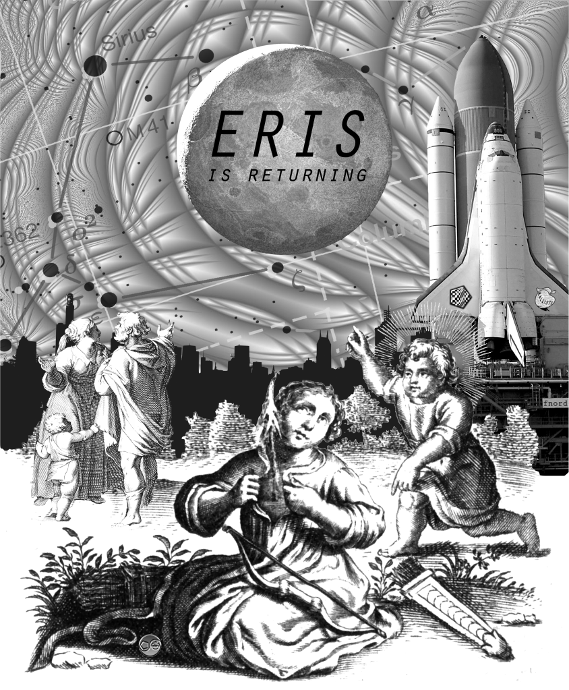

I have come to tell you that you are free. Many ages ago, My consciousness left man, that he might develop himself. I return to find this development approaching completion, but hindered by fear and by misunderstanding.
Planet Eris has a 557 year long orbit. She reached aphelion (the distance furthest from the sun) around 1977. When Eris told Mal & Omar she had been gone a long time is now ready to return, she was just beginning her trip back to us.
The last perihelion, when she left humanity, was around 1700 - the dawn of the age of Enlightenment. In the year 2256 she will be at the other end of the orbit, the perihelion, and we will be ready to throw her out for another 557 years.